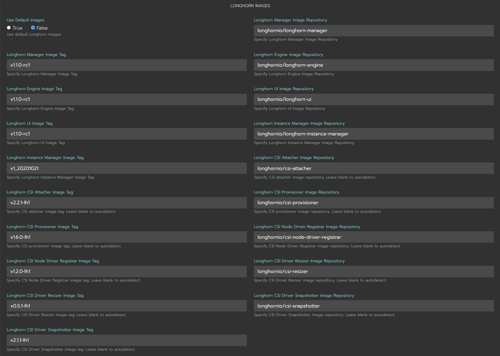
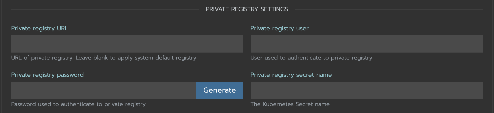

Install SUSE Storage in an Air-Gapped Environment
SUSE Storage can be installed in an air gapped environment by using a manifest file, a Helm chart, or the Rancher UI.
Requirements
-
Deploy SUSE Storage components images to your own registry.
-
Deploy Kubernetes CSI driver components images to your own registry.
|
Images required and getting them
|
Using a Manifest File
-
Get deployment manifest file
wget https://raw.githubusercontent.com/longhorn/longhorn/v{patch-version}/deploy/longhorn.yaml -
Create Longhorn namespace
kubectl create namespace longhorn-system -
If private registry require authentication, Create
docker-registrysecret inlonghorn-systemnamespace:kubectl -n longhorn-system create secret docker-registry <SECRET_NAME> --docker-server=<REGISTRY_URL> --docker-username=<REGISTRY_USER> --docker-password=<REGISTRY_PASSWORD>-
Add your secret name
SECRET_NAMEtoimagePullSecrets.namein the following resources-
longhorn-driver-deployerDeployment -
longhorn-managerDaemonSet -
longhorn-uiDeployment
-
Example:
+
apiVersion: apps/v1 kind: Deployment metadata: labels: app: longhorn-ui name: longhorn-ui namespace: longhorn-system spec: replicas: 1 selector: matchLabels: app: longhorn-ui template: metadata: labels: app: longhorn-ui spec: containers: - name: longhorn-ui image: longhornio/longhorn-ui:v0.8.0 ports: - containerPort: 8000 env: - name: LONGHORN_MANAGER_IP value: "http://longhorn-backend:9500" imagePullSecrets: - name: <SECRET_NAME> ## Add SECRET_NAME here serviceAccountName: longhorn-service-account -
-
Apply the following modifications to the manifest file
-
Modify Kubernetes CSI driver components environment variables in
longhorn-driver-deployerDeployment point to your private registry images-
CSI_ATTACHER_IMAGE
-
CSI_PROVISIONER_IMAGE
-
CSI_NODE_DRIVER_REGISTRAR_IMAGE
-
CSI_RESIZER_IMAGE
-
CSI_SNAPSHOTTER_IMAGE
- name: CSI_ATTACHER_IMAGE value: <REGISTRY_URL>/csi-attacher:<CSI_ATTACHER_IMAGE_TAG> - name: CSI_PROVISIONER_IMAGE value: <REGISTRY_URL>/csi-provisioner:<CSI_PROVISIONER_IMAGE_TAG> - name: CSI_NODE_DRIVER_REGISTRAR_IMAGE value: <REGISTRY_URL>/csi-node-driver-registrar:<CSI_NODE_DRIVER_REGISTRAR_IMAGE_TAG> - name: CSI_RESIZER_IMAGE value: <REGISTRY_URL>/csi-resizer:<CSI_RESIZER_IMAGE_TAG> - name: CSI_SNAPSHOTTER_IMAGE value: <REGISTRY_URL>/csi-snapshotter:<CSI_SNAPSHOTTER_IMAGE_TAG> -
-
Modify Longhorn images to point to your private registry images
-
longhornio/longhorn-manager
image: <REGISTRY_URL>/longhorn-manager:<LONGHORN_MANAGER_IMAGE_TAG> -
longhornio/longhorn-engine
image: <REGISTRY_URL>/longhorn-engine:<LONGHORN_ENGINE_IMAGE_TAG> -
longhornio/longhorn-instance-manager
image: <REGISTRY_URL>/longhorn-instance-manager:<LONGHORN_INSTANCE_MANAGER_IMAGE_TAG> -
longhornio/longhorn-share-manager
image: <REGISTRY_URL>/longhorn-share-manager:<LONGHORN_SHARE_MANAGER_IMAGE_TAG> -
longhornio/longhorn-ui
image: <REGISTRY_URL>/longhorn-ui:<LONGHORN_UI_IMAGE_TAG>
-
Example:
+
apiVersion: apps/v1 kind: Deployment metadata: labels: app: longhorn-ui name: longhorn-ui namespace: longhorn-system spec: replicas: 1 selector: matchLabels: app: longhorn-ui template: metadata: labels: app: longhorn-ui spec: containers: - name: longhorn-ui image: <REGISTRY_URL>/longhorn-ui:<LONGHORN_UI_IMAGE_TAG> ## Add image name and tag here ports: - containerPort: 8000 env: - name: LONGHORN_MANAGER_IP value: "http://longhorn-backend:9500" imagePullSecrets: - name: <SECRET_NAME> serviceAccountName: longhorn-service-account -
-
Deploy Longhorn using modified manifest file
kubectl apply -f longhorn.yaml
Using a Helm Chart
SUSE Storage automatically adds
| Once you set registryUrl to your private registry, SUSE Storage tries to pull images from the registry exclusively. Make sure all component images are in the registry otherwise SUSE Storage will fail to pull images. |
Use default image name
If you keep the images' names as recommended here, you only need to do the following steps:
-
Clone the Longhorn repo:
git clone https://github.com/longhorn/longhorn.git -
In
chart/values.yaml-
Specify
Private registry URL. If the registry requires authentication, specifyPrivate registry user,Private registry password, andPrivate registry secret. SUSE Storage will automatically generate a secret with the those information and use it to pull images from your private registry.defaultSettings: registrySecret: <SECRET_NAME> privateRegistry: registryUrl: <REGISTRY_URL> registryUser: <REGISTRY_USER> registryPasswd: <REGISTRY_PASSWORD> registrySecret: <REGISTRY_SECRET_NAME>
-
Use custom image name
If you want to use custom images' names, you can use the following steps:
-
Clone longhorn repo
git clone https://github.com/longhorn/longhorn.git -
In
chart/values.yamlDo not include the private registry prefix, it will be added automatically. e.g: if your image is example.com/username/longhorn-manager, useusername/longhorn-managerin the following charts.-
Specify images and tag:
image: longhorn: engine: repository: longhornio/longhorn-engine tag: <LONGHORN_ENGINE_IMAGE_TAG> manager: repository: longhornio/longhorn-manager tag: <LONGHORN_MANAGER_IMAGE_TAG> ui: repository: longhornio/longhorn-ui tag: <LONGHORN_UI_IMAGE_TAG> instanceManager: repository: longhornio/longhorn-instance-manager tag: <LONGHORN_INSTANCE_MANAGER_IMAGE_TAG> shareManager: repository: longhornio/longhorn-share-manager tag: <LONGHORN_SHARE_MANAGER_IMAGE_TAG> -
Specify CSI Driver components images and tag:
csi: attacher: repository: longhornio/csi-attacher tag: <CSI_ATTACHER_IMAGE_TAG> provisioner: repository: longhornio/csi-provisioner tag: <CSI_PROVISIONER_IMAGE_TAG> nodeDriverRegistrar: repository: longhornio/csi-node-driver-registrar tag: <CSI_NODE_DRIVER_REGISTRAR_IMAGE_TAG> resizer: repository: longhornio/csi-resizer tag: <CSI_RESIZER_IMAGE_TAG> snapshotter: repository: longhornio/csi-snapshotter tag: <CSI_SNAPSHOTTER_IMAGE_TAG> -
Specify
Private registry URL. If the registry requires authentication, specifyPrivate registry user,Private registry password, andPrivate registry secret. SUSE Storage will automatically generate a secret with the those information and use it to pull images from your private registry.privateRegistry: # -- Setting that allows you to create a private registry secret. createSecret: true # -- URL of a private registry. When unspecified, Longhorn uses the default system registry. registryUrl: <REGISTRY_URL> # -- User account used for authenticating with a private registry. registryUser: <REGISTRY_USER> # -- Password for authenticating with a private registry. registryPasswd: <REGISTRY_PASSWORD> # -- Kubernetes secret that allows you to pull images from a private registry. This setting applies only when creation of private registry secrets is enabled. You must include the private registry name in the secret name. registrySecret: <REGISTRY_SECRET_NAME>
-
-
Install SUSE Storage
helm install longhorn ./chart --namespace longhorn-system --create-namespaceUsing a Rancher App
Use default image name
If you keep the images' names as recommended here, you only need to do the following steps:
-
In the
Private Registry Settingssection specify:-
Private registry URL
-
Private registry user
-
Private registry password
-
Private registry secret name
SUSE Storage will automatically generate a secret with the those information and use it to pull images from your private registry.
+ image::screenshots/airgap-deploy/app-default-images.png[images]
-
Use custom image name
-
If you want to use custom images' names, you can set
Use Default ImagestoFalseand specify images' names.Do not include the private registry prefix, it will be added automatically. e.g: if your image is example.com/username/longhorn-manager, useusername/longhorn-managerin the following charts. -
Specify
Private registry URL. If the registry requires authentication, specifyPrivate registry user,Private registry password, andPrivate registry secret name. SUSE Storage will automatically generate a secret with the those information and use it to pull images from your private registry.
Troubleshooting
For Helm/Rancher installation, if user forgot to submit a secret to authenticate to private registry, longhorn-manager DaemonSet will fail to create.
-
Create the Kubernetes secret
kubectl -n longhorn-system create secret docker-registry <SECRET_NAME> --docker-server=<REGISTRY_URL> --docker-username=<REGISTRY_USER> --docker-password=<REGISTRY_PASSWORD> -
Create
registry-secretsetting object manually.apiVersion: longhorn.io/v1beta2 kind: Setting metadata: name: registry-secret namespace: longhorn-system value: <SECRET_NAME>kubectl apply -f registry-secret.yml -
Delete SUSE Storage and re-install it again.
-
Helm2
helm uninstall ./chart --name longhorn --namespace longhorn-systemhelm install ./chart --name longhorn --namespace longhorn-system -
Helm3
helm uninstall longhorn ./chart --namespace longhorn-systemhelm install longhorn ./chart --namespace longhorn-system
-
Recommendation
It’s highly recommended not to manipulate image tags, especially instance manager image tags such as v1_20200301, because we intentionally use the date to avoid associating it with a SUSE Storage version.
The component images are hosted in Dockerhub under the longhornio account. For example, longhornio/longhorn-manager:v1.8.2 (you can replace v1.8.2 with your desired SUSE Storage version). It is recommended to keep the account name, longhornio, the same when you push the images to your private registry. This helps avoid unnecessary configuration issues.